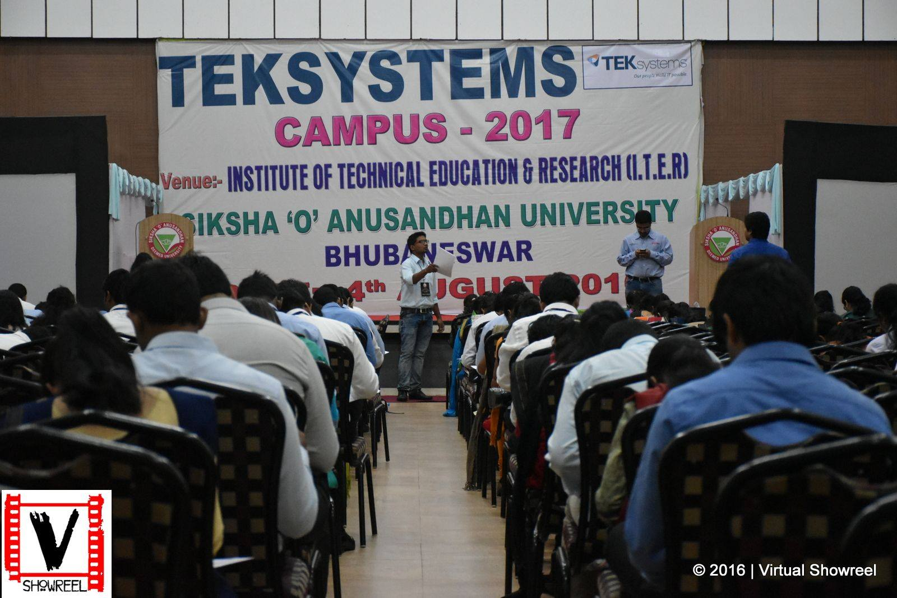

ROUND 1: WRITTEN APTITUDE & TECHNICAL ROUND
The first round consisted of an offline written examination,with a marking scheme of 1 mark per question.
60 Questions 60 Marks.
The main idea of this section was to check the speed and accuracy of the candidate,the questions were easy.
Quantitative Aptitude-15
Logical Reasoning-15
Data Interpretattion-10
English-10
Programming-10
The cut off set (what i was told) for us was 48.
This trimmed the total number of candidates from ~470 to just 75.
ROUND 2: GROUP DISCUSSION
We were divided into groups of 15-19. There were no specific predetermined topics.
The topic was changed thrice since we all bombing each other with our own premonitions,I think that was an awesome thing since the topics were vivid and different
one was philospohical,second was realist and based on facts and the third was an opinion based.
So you got 3 different chances bearing the different mindsets people have.
Topic 1-Hard Work vs Smart Work
Topic 2-Online Shopping vs Offline Shopping
Topic 3-Should GD be a part of the recruitment process.
Observations: You should have good fluency,give respect to what others are saying and disagree with a smile.
ROUND 3: PERSONAL INTERVIEWS
Interview 1:
Interviewer: Tell Me Something About Yourself
Me: Told all about myself,said where my native is,jumped to Work experience(I work part time in my college),qualities and the usual things.
Interviewer: Do you have any experience in coding
Me: I had a subject in my 2nd semester of engineering(with a long smile(I'm from ECE))
Interviewer: How can you obtain this:*****
****
***
**
*
Me: Gave the output using a loop and a general "printf \n"
I took time to make out the loop logic as I did'nt remember the exact logic(using 2 loops)
Interviewer: Okay,So Whats this part time thing you do?
Me: Explained
Interviewer: Why did you do this internship/part time business?
Me: Wanted to know my market value,though it feels difficult at the start,but pushing oneself out of the comfort zone really helps in the long run.
Interviewer: In the internship,what was responsibilities you had?
Me: Explained.
Interviewer: Did you do any coding in these responsibilities?
Me: Although I was not involved in the direct usage of tools,but I had a good working knowledge of all the technologies and again related it to the fact that
in consulting,there are many verticals where only tech skills dont come into play.
Interviewer: So you have not coded much?
Me: I would'nt put it that way,,TEK has a big division in data analytics?she said Yes,so what exactly you do in BI,HR said
analysing generated data and recommending clients,can web analytics be called a type of BI? she said yes,then i told her about the internship on Google Analytics
Interviewer: Do you have any questions for me
Me: I felt that i had not made a dent in the HR's mind,so I used this opportunity to let her know how much interested I genuinely was.
Asked him a ton of questions,and related each of the firm's work to something I had done in college to draw out a parallel.
Interviewer: Okay,it seems you have researched well.
Me: Smile I gave and said a line I'd heard on the Oprah Winfrey show,"Luck is preparation meeting opportunity"
The interviewer then took my CV writing a feedback(i suppose) and sent it further. Interview lasted for 15-20 Minutes
________________________________________________________________________________________
Interview 2:
Interviewer: Tell me something about yourself
Me: Repeated
Interviewer: Tell me something about your family
Me: Told
Interviewer: What about Hyderabad(Recruits report to the Hyderabad Office)
Me: Told
Interviewer: Do you have any plans for higher studies
Me: I said I didnt have any and maybe after 7-8 years if i feel that something more is required then I might consider this option.
for now,I want to develop the skillset and be a subject matter expert.
(the thing t understand here is that the company will be investing huge sum of money on your training and development,and will not want such a
resource to leave the company)
Interviewer: Why Teksystems ?
Me: Told about their policy on how they focus on career development and the reviews and ratings of the company were high on glassdoor and payscale.
Interviewer: You've done many extra-curriculars,dont you think that they've hampered your academics?
Me: No,the scores I have are decent enough and I have an understanding of the working principles of all the things I learnt during my course.
Interviewer: Why the part time?
Me: Drew a parallel between Western Kids and us Indians,how thet start so early in life and we slog around till our early 20s to earn a living,
enjoying with a heavy pocket of your own is too good a feeling.
Interviewer: Do you have any questions?
Me: Asked about on site clients,do they have domestic clients,how does Teksystems as a firm contributes to the client's growth.
Interview ended lasting about 15 minutes.
________________________________________________________________________________________
Interview 3:
Interviewer: Hey there,how have you been ?
Me: All Smiles(I had an idea in my mind that if this is interview 3 then I have a strong chance in making the cut)
Interviewer: Your CV looks different,from where did you get the idea?
Me: I didnt want it to be textual,some graphic elements make it look appealing and Yes Ive designed it on Photoshop !
Interviewer: Where is your native and what does your father do ?
Me: Answered.
Interviewer: So ECE,why ?
Me: The Mobility Age,information age,ECE Made sense,related it to IT,ITes and ITIS.
Interviewer: What sets you apart?
Me: Most people stop at the start,I dont have any fear of failure,I like to learn and am well versed with Real World Skils,I even went ahead and told boldly
that you wont find any other guy like me in the entire crowd,I smilingly said "be better than the best or different than the rest"
Interviewer: Do you have any questions ?
Me: Why did FCS become TEK,Did they change their area of working,does TEK do recruiting in India,asked if TEK gives on job training or different training program,
how do they choose which recruits work in which vertical(I then let him know my interest in BI)
Interviewer: Why Teksystems,Deloitte is coming up next,similar package,similar location.
Me: That would be comparing Apples to Oranges,for starters TEK is a privately held company,while deloitte is a LLP,the employee reviews and work cultures are different,
and I feel that a being a part of TEk,my impact area would be much larger compared to deloitte where I'll be a drop in the ocean.
Interviewer: what do you know about TEK
Me: Had read all about the company in Business Insider and fortune,told them about the global footprint and how this would help in building my career and throwing growth opportunities at my doorstep.
This interview lasted for 25-30 Minutes.
Sed tristique purus vitae volutpat ultrices. Aliquam eu elit eget arcu commodo suscipit dolor nec nibh. Proin a ullamcorper elit, et sagittis turpis. Integer ut fermentum.
Sed tristique purus vitae volutpat ultrices. Aliquam eu elit eget arcu commodo suscipit dolor nec nibh. Proin a ullamcorper elit, et sagittis turpis. Integer ut fermentum.
Sed tristique purus vitae volutpat ultrices. Aliquam eu elit eget arcu commodo suscipit dolor nec nibh. Proin a ullamcorper elit, et sagittis turpis. Integer ut fermentum.